기계설계기사 (2013-06-02 기출문제)
1과목: 재료역학
1. 재료가 순수 전단력을 받아 선형 탄성적으로 거동할 때 변형 에너지밀를 구하는 식이 아닌 것은? (단, τ:전단응력, G:전단 탄성계수, γ:전단변형률)
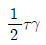
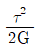
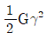
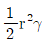
(정답률: 알수없음)

2. 피로 한도(fatigue limit)와 가장 관계가 깊은 하중은?
- 충격 하중
- 정 하중
- 반복 하중
- 수직 하중
(정답률: 알수없음)
3. 평면 변형률 상태에서 변형률 εx, εy 그리고 γxy가 주어졌다면 이 때 주변형률 ε1과 ε2는 어떻게 주어지는가?
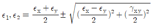
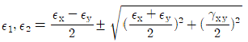
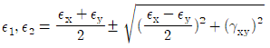
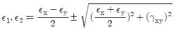
(정답률: 알수없음)
4. 그림과 같은 직사각형 단면을 갖는 기둥이 단면의 도심에 길이 방향의 압축하중을 받고 있다. x-x축 중심의 좌굴과 y-y축 중심의 좌굴에 대한 임계하중의 비는? (단, 두 경우에 있어서의 지지조건은 동일하다.)
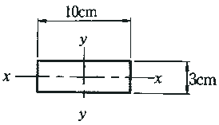
- 0.09
- 0.21
- 0.18
- 0.36
(정답률: 알수없음)
5. 100rpm으로 30kW를 전달시키는 길이 1m, 지름 7cm인 둥근 측단의 비틀림각은 약 몇 rad인가? (단, 전단 탄성계수 G=83GPa이다.)
- 0.26
- 0.30
- 0.015
- 0.009
(정답률: 알수없음)
6. 길이가 L인 외팔보 AB가 오른쪽 끝 B가 고정되고 전 길이에 ω의 균일분포하중이 작용할 때 이 보의 최대 처짐은? (단, 보의 굽힘 강성 EI는 일정하고, 자중은 무시한다.)
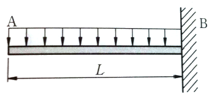
- ωL4/4EI
- 2ωL4/5EI
- ωL4/8EI
- 5ωL4/2EI
(정답률: 알수없음)
7. 바깥지름 do=40cm, 안지름 di=20cm의 중공축은 동일 단면적을 가진 중실축보다 몇 배의 토크를 견디는가?
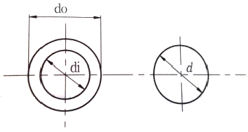
- 1.24
- 1.44
- 1.64
- 1.84
(정답률: 알수없음)
8. 그림과 같은 평면 트러스에서 절점 A에 단일하중 P=80kN이 작용할 때, 부재 AB에 발생하는 부재력의 크기 및 방향을 구하면?
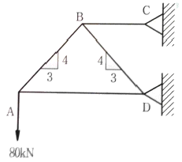
- 60kN, 압축
- 100kN, 압축
- 60kN, 인장
- 100kN, 인장
(정답률: 알수없음)
9. 회전반경 K, 단면 2차 모멘트 I, 단면적을 A라고 할 때 다음 중 맞는 것은?
- K=A/I
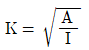
- K=I/A
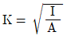
(정답률: 알수없음)
10. 지름 D인 두께가 얇은 링(ring)을 수평면 내에서 회전 시킬 때, 링에 생기는 인장응력을 나타내는 식은? (단, 링의 단위 길이에 대한 무게를 W, 링의 원주속도를 V, 링의 단면적을 A, 중력가속도 를 g로 한다.)
- WV2/DAg
- WV2/Ag
- WDV2/Ag
- WV2/Dg
(정답률: 알수없음)
11. 다음 그림과 같이 집중하중을 받는 일단 고정, 타단 지지된 보에서 고정단에서의 모멘트는?
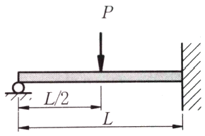
- 0
- PL/2
- 3PL/8
- 3PL/16
(정답률: 알수없음)
12. 그림과 같이 두 외팔보가 롤러(Roller)를 사이에 두고 접촉되어 있을 때, 이 접촉점 C에서의 반력은? (단, 두 보의 굽힘강성 EI는 같다.)
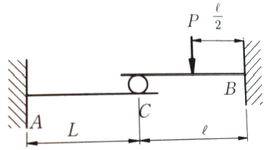
- P/6
- P/24
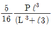
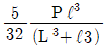
(정답률: 알수없음)
13. 그림과 같은 구조물에서 단면 m-n상에 발생하는 최대 수직응력의 크기는 몇 MPa인가?
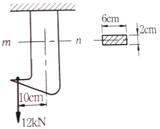
- 10
- 90
- 100
- 110
(정답률: 알수없음)
14. 길이 L=2m이고 지름 ø25mm인 원형단면의 단순지지보의 중앙에 집중하중 400kN이 작용할 때 최대 굽힘응력은 약 몇 kN/mm2인가?
- 65
- 100
- 130
- 200
(정답률: 알수없음)
15. 단면이 정사각형인 외팔보에서 그림과 같은 하중을 받고 있을 때 허용응력이 σω이면 정사각형 단면의 한변의 길이 b는 얼마이상이어야 하는가?
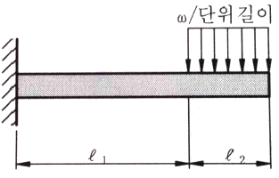
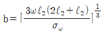
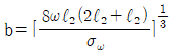
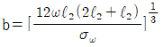
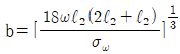
(정답률: 알수없음)
16. 직경 20mm, 길이 50mm의 구리 막대의 양단을 고정하고 막대를 가열하여 40℃ 상승했을 때 고정단을 누르는 힘은 약 몇 kN 정도인가? (단, 구리의 선팽창계수 α=0.16×10-4℃, 탄성계수 E=110GPa이다.)
- 52
- 25
- 30
- 22
(정답률: 알수없음)
17. 길이 1m, 지름 50mm, 전단탄성계수 G=75GPa인 환봉축에 800N·m의 토크가 작용될 때 비틀림각은 약 몇 도인가?
- 1°
- 2°
- 3°
- 4°
(정답률: 알수없음)
18. 원형단면 보의 지름 D를 2D로 크게 하면, 동일한 전단력이 작용하는 경우 그 단면에서의 최대전단응력(τmax)는 어떻게 되는가?
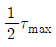
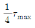
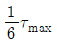
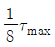
(정답률: 알수없음)
19. 두께 2mm, 폭 6mm, 길이 60m인 강대(steel band)가 매달려 있을 때 자중에 의해서 몇 cm가 늘어나는가? (단, 강대의 탄성계수 E=210GPa, 단위체적당 무게 γ=78kN/m3이다.)
- 0.067
- 0.093
- 0.104
- 0.127
(정답률: 알수없음)
20. 그림과 같이 균일분포하중을 받고 있는 돌출보의 굽힘 모멘트 선도(BMD)는?
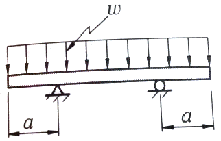
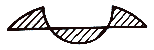
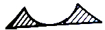
(정답률: 알수없음)
2과목: 기계제작법
21. 가공액은 물이나 경유를 사용하여 세라믹에 구멍을 가공할 수 있는 것은?
- 래핑 가공
- 전주 가공
- 전해 가공
- 초음파 가공
(정답률: 알수없음)
22. 구성인성(built-up edge)의 방지 대책으로 옳은 것은?
- 절삭깊이를 많게 한다.
- 절삭속도를 느리게 한다.
- 절삭공구 경사각을 작게 한다.
- 절삭공구의 인선을 예리하게 한다.
(정답률: 알수없음)
23. 금속의 표면을 단단하게 하기 위한 물리적인 표면 경화법은?
- 청화법
- 질화법
- 침탄법
- 화염 경화법
(정답률: 알수없음)
24. 밀링작업의 단식 분할법으로 이(tooth)수가 28개인 스퍼기어를 가공할 때 브라운샤프형 분할판 No2 21구멍열에서 분할 크랭크의 회전수와 구멍수는?
- 0회전시키고 6구멍씩 전진
- 0회전시키고 9구멍씩 전진
- 1회전시키고 6구멍씩 전진
- 1회전시키고 9구멍씩 전진
(정답률: 알수없음)
25. CNC 프로그래밍에서 G 기능이란?
- 보조기능
- 이송기능
- 주축기능
- 준비기능
(정답률: 알수없음)
26. 초음파가공에서 나타나는 현상 및 작용에 대한 설명 중 틀린 것은?
- 공구의 해머링 작용에 의한 가공물의 미세한 파쇄
- 혼의 재료는 황동, 연강, 공구강 등을 사용
- 가공물 표면에서의 증발현상
- 가속된 연삭입자의 충격작용
(정답률: 알수없음)
27. 납, 주석, 알루미늄 등의 연한 금속이나 얇은 판금의 가장자리를 다듬질 작업할 때 사용하는 줄눈의 모양은?
- 귀목
- 단목
- 복목
- 파목
(정답률: 알수없음)
28. 다음 중 나사의 각도, 피치, 호칭지름의 측정이 가능한 측정기는?
- 사인바
- 정밀수준기
- 공구현미경
- 버니어캘리퍼스
(정답률: 알수없음)
29. 표면이 서로 다른 모양으로 조각된 1쌍의 다이를 이용하여 메달, 주화 등을 가공하는 방법은?
- 벌징(bilging)
- 코이닝(coining)
- 스피닝(spining)
- 엠보싱(embossing)
(정답률: 알수없음)
30. 프레스 가공의 보조장치 중 판금재료 바깥둘레의 변형을 방지하기 위하여 사용하는 것은?
- 다이 세트
- 다이 홀더
- 판 누르게
- 금형 가이드
(정답률: 알수없음)
31. 연강용 피복 아크 용접봉 중 고셀룰로오스계에 해당하는 용접봉으로 피복이 얇고 슬래그가 적어 배관공사에 적당한 것은?
- E 4301
- E 4303
- E 4311
- E 4316
(정답률: 알수없음)
32. 게이지 블록(gauge block)의 취급방법으로 틀린 것은?
- 먼지가 적고 건조한 실내에서 사용할 것
- 신속한 측정을 위해 공작기계위에 놓고 계속 사용할 것
- 측정면은 깨끗한 천이나 가죽으로 잘 닦아 사용할 것
- 녹을 막기 위하여 사용한 뒤에는 잘 닦아 방청유를 칠해 둘 것
(정답률: 알수없음)
33. 상하의 형에 문자나 무뉘의 요철을 붙이고, 이 사이에 소재를 놓고 압축하여 문자나 무늬를 생성하는 가공방법은?
- 압출 가공(extruding)
- 업세팅 가공(up setting)
- 압인 가공(coining)
- 블랭킹 가공(blanking)
(정답률: 알수없음)
34. 주물사의 구비조건이 아닌 것은?
- 통기성이 좋을 것
- 성형성이 좋을 것
- 열전도성이 좋을 것
- 내열성이 좋을 것
(정답률: 알수없음)
35. 저탄소강의 표면에 탄소를 침투시키는 고체 침탄법에 대한 일방적인 설명으로 틀린 것은?
- 침탄시간이 길어지면 침탄깊이가 깊어진다.
- 소량생산에 적합하다.
- 큰 부품의 처리가 가능하다.
- 보통 침탄 깊이는 5~10mm 이다.
(정답률: 알수없음)
36. 연삭숫돌의 결합도 중 단단함(hard)에 해당되는 것은?
- F
- J
- R
- O
(정답률: 알수없음)
37. 인발 가공에 있어서 역장력(back tention)을 주는 이유로 틀린 것은?
- 인발 다이의 수명을 연장시킬 수 있다.
- 제품의 지름을 보다 정밀하게 인발할 수 있다.
- 다이의 온도 상승을 적게 할 수 있다.
- 인발력을 감소시킬 수 있다.
(정답률: 알수없음)
38. 다음 중 다이아몬드, 수정 등 보석류 가공에 가장 적합한 것은?
- 초음파 가공
- 방전 가공
- 수퍼피니싱 가공
- 전해 가공
(정답률: 80%)
39. 코어가 없이 원통형 주물을 제조할 수 있는 주조 방법은?
- 연속주조방법
- 원심주조방법
- 저압주조방법
- 다이캐스팅법
(정답률: 알수없음)
40. 1938년 미국의 Bruce에 의하여 발명된 다이캐스팅(die casting)의 특징으로 틀린 것은?
- 조직이 치밀하고, 강도가 높다.
- 다량생산에 적합하다.
- die의 제작비가 고가이다.
- 주물에 사용되는 합금은 주로 탄소강재를 사용한다.
(정답률: 알수없음)
3과목: 기계설계 및 기계재료
41. 표준 스퍼 기어의 잇수 48, 바깥지름이 200[mm]일 때, 이 기어의 원주피치는 몇[mm]인가?
- 약 18.68
- 약 9.67
- 약 12.57
- 약 15.78
(정답률: 알수없음)
42. 원판상(圓板狀)의 밸브를 흐름과 직각인 축의 둘레에 회전시켜서 유량을 조절하며, 교측 밸브(throttle valve)로 보통 사용되는 것은?
- 나비형 밸브
- 슬루스 밸브
- 스톱 밸브
- 콕
(정답률: 알수없음)
43. 리벳 이음에서 피치를 P, 리벳으로써 졸라맨 후의 리벳 지름 또는 구멍지름을 d라고 할 때, 강판의 파괴에 대한 효율을 나타내는 식으로 옳은 것은?
- p-d/p
- p+d/p
- p/p-d
- p/p+d
(정답률: 알수없음)
44. 증기, 가스 등의 유체가 제한된 최고 압력을 초과했을 때 자동적으로 밸브가 열려서 유체를 외부로 배출하며, 배출이 끝난 후에는 압력이 정확하게 유지되고 제한 압력보다 너무 내려가지 않아야 하는 것은?
- 릴리프 밸브(relief valve)
- 정지 밸브(stop valve)
- 체크 밸브(check valve)
- 나비형 밸브(butterfly valve)
(정답률: 알수없음)
45. 이론적으로 기어의 압력각이 14.5°일 때 언더컷을 일으키지 않는 한계 잇수는?
- 35개
- 32개
- 30개
- 17개
(정답률: 알수없음)
46. 원추 클러치에서 원추각이 마찰각 이하로 될 때 나타나는 현상으로 옳은 것은?
- 원추를 잡아 빼내는데 힘이 들어 불편하다.
- 축방향에 밀어 부치는 힘 P가 크게 된다.
- 시동할 때 클러치의 물리는 상태가 아주 원활하기 때문에 충격이 일어나지 않는다.
- 모양이 소형이 되므로 공작이 용이하다.
(정답률: 알수없음)
47. 내부 확장식 브레이크에 있어서, 브레이크슈(break shoe)를 안쪽에서 바깥쪽으로 확장시키는 장치로서 다음 중 어느 것이 가장 좋은가?
- 전기 또는 압축공기
- 진공 또는 링크
- 증기 또는 진공
- 캠 또는 유압
(정답률: 75%)
48. 모듈 m=3인 표준 스퍼기어에서 이끝 틈새를 0.25×모듈(m)으로 할 때 총 이 높이는 몇 mm인가?
- 3.75
- 4.86
- 6.75
- 7.56
(정답률: 알수없음)
49. 축 방향의 인장력이나 압축력을 전달하는 데 가장 적합한 축 이음은?
- 머프(muff coupling)
- 유니버설 조인트(universal joint)
- 코터 이음(cotter joint)
- 올덤 축이음(oldham’s coupling)
(정답률: 알수없음)
50. 세레이션(serration)에 대한 일반적인 설명 중 틀린 것은?
- 스플라인에 비하여 치수(齒數)가 많다.
- 삼각치 세레이션은 끼워맞춤 정밀도가 나쁘고 작업 공수가 많다.
- 세레이션은 주로 정적인 이음에만 사용된다.
- 측압 강도가 작아서 같은 바깥지름의 스플라인에 비해 큰 회전력을 전달할 수 없다.
(정답률: 알수없음)
51. 금속을 소성가공 할 때에 냉간가공과 열간가공을 구분하는 온도는?
- 담금질온도
- 변태온도
- 재결정온도
- 단조온도
(정답률: 알수없음)
52. 순철의 자기변태와 동소변태를 설명한 것으로 틀린 것은?
- 동소변태란 결정격자가 변하는 변태를 말한다.
- 자기변태도 결정격자가 변하는 변태이다.
- 동소변태점은 A3점과 A4점이 있다.
- 자기변태점은 약 768℃ 정도이며 일명 큐리(curie)점이라 한다.
(정답률: 알수없음)
53. 탄소강을 풀림(Annealing)하는 목적과 관계없는 것은?
- 결정입도 조절
- 상온가공에서 생긴 내부응력 제거
- 오스테나이트에서 탄소를 유리시킴
- 재료에 취성과 경도부여
(정답률: 알수없음)
54. 베이나이트(bainite)조직을 얻기 위한 항온열처리 조작으로 가장 적합한 것은?
- 오스포밍
- 마퀜칭
- 오스템퍼링
- 마템퍼링
(정답률: 알수없음)
55. 다음의 탄소강 조직 중 일반적으로 경도가 가장 낮은 것은?
- 페라이트
- 트루스타이트
- 마텐자이트
- 시멘타이트
(정답률: 알수없음)
56. 주철에서 쇳물의 유동성을 감소시키는 가장 주된 원소는?
- P
- Mn
- S
- Si
(정답률: 알수없음)
57. 경도가 대단히 높아 압연이나 단조작업을 할 수 없는 조직은?
- 시멘타이트(cementite)
- 오스테나이트(austenite)
- 페라이트(ferrite)
- 펄라이트(pearite)
(정답률: 알수없음)
58. 같은 조건하에서 금속의 냉각속도가 빠르면 조직은 어떻게 변하는가?
- 결정입자가 미세해진다.
- 냉각속도와 금속의 조직과는 관계가 없다.
- 금속의 조직이 조대해진다.
- 소수의 핵이 성장해서 응고된다.
(정답률: 알수없음)
59. 황(S) 성분이 적은 선철을 용해로, 전기로에서 용해한 후 주형에 주입 전 마그네슘, 세륨, 칼슘등을 첨가시켜 흑연을 구상화한 것은?
- 합금주철
- 구상흑연주철
- 칠드주철
- 가단주철
(정답률: 알수없음)
60. 특수강에 포함된 Ni원소의 영향이다. 틀린 것은?
- Martensite 조직을 안정화시킨다.
- 담금질성이 증대된다.
- 저온 취성을 방지한다.
- 내식성이 증가한다.
(정답률: 알수없음)
4과목: 기구학 및 CAD
61. B-Spline 곡선의 특성이 아닌 것은?
- 중복된 조정점을 가질 수 있다.
- 중복된 매듭(knot)값을 가질 수 있다.
- 조정점의 수가 증가하면, 곡선의 차수도 증가한다.
- Bezier 곡선을 표시할 수 있다.
(정답률: 30%)
62. 솔리드모델링 시스템 에서 구멍(hole), 포켓(pocket), 모따기(chamfer), 필릿(fillet), 슬롯(slot) 등과 같이 모델링의 단위로서 공학적 의미를 담고 있는 것은?
- 구속조건(constraint)
- 특징형상(feature)
- 파라미터(parameter)
- 어셈블리(assembly)
(정답률: 알수없음)
63. IGES 파일의 아래 구성요소 중 각 형상에 대한 실제 데이터를 저장하는 부분은?
- Start section
- Global section
- Terminate section
- Parameter data section
(정답률: 알수없음)
64. 원점이 중심이고 장축이 x축이고 그 길이가 a, 단축이 y축이고 그 길이가 b인 타원을 표현하는 매개변수식은?
- x = (a-b)cosθ, y = (a-b)sinθ(0 ≤ θ ≤ 2π)
- x = acosθ, y = bsinθ(0 ≤ θ ≤ 2π)
- x = acoshθ, y = (a-b)sinhθ(0 ≤ θ ≤ 2π)
- x = (a-b)coshθ, y = (a-b)sinhθ(0 ≤ θ ≤ 2π)
(정답률: 알수없음)
65. 다음 중 솔리드 모델을 위한 특징형상(feature)기반 모델링 방법과 거리가 먼 것은?
- chamfering
- pocketing
- skinning
- filltering
(정답률: 알수없음)
66. 솔리드모델의 표현법 중 옥트리(Octree) 표현법에 대한 설명으로서 틀린 것은?
- 한 개의 노드가 다시 나누어진다면 8개의 자식(children)노드를 갖는다.
- 일단 이 표현법으로 표현된 솔리드끼리의 불리언(Boolean) 집합연산은 매우 빠르게 수행 될 수 있다.
- 회전변환 후 역회전 변환을 수행하는 경우 수치 데이터들의 오류가 없다.
- 같은 물체도 원하는 정밀도가 정확도에 따라서 트리의 깊이는 달라진다.
(정답률: 알수없음)
67. 서피스 모델이나 솔리드 모델과 비교할 때 와이어 프레임 모델에 관한 설명으로 틀린 것은?
- 가공정보의 계산이 가능하다.
- 데이터 구조가 간단하다.
- 저장되는 정보의 양이 적다.
- 처리속도가 빠르다.
(정답률: 알수없음)
68. 그래픽 속도를 개선하기 위해, 물체가 정적일 때는 높은 상세도로, 물체가 움직일 때는 낮은 상세도로 화면에 표시하는 랜더링 품질 제어를 무엇이라 하는가?
- LOD(level of detail)
- Culling
- HMD(head-mounted display)
- CAVE
(정답률: 알수없음)
69. CAD의 그래픽 장치로써 래스터 그래픽(raster display)장치와 벡터 그래픽(vector display) 장치를 비교할 때 래스터 그래픽 장치의 장점이 될 수 있는 것은?
- 주사선이 도형의 형상을 따라 움직인다.
- 직선을 재그(jag) 없이 항상 직선으로 쉽게 나타 낼 수 있다.
- 주사변환(scan conversion)이 필요하지 않다.
- 이미지의 복잡성에 관계없이 일정한 속도로 화면 리프레쉬(refresh)가 가능하다.
(정답률: 알수없음)
70. 곡면 모델링 시스템(surface modeling system)에서 곡면을 생성하기 위하여 주로 사용하는 방법과 가장 거리가 먼 것은?
- 곡면 상의 점들을 입력하여 보간 곡면을 생성
- 솔리드(solid)의 위상(lopology)정보를 사용하여 곡면을 생성
- 주어진 곡선을 직선이동 또는 회전이동하여 곡면을 생성
- 곡면 상의 곡선들을 그물 형태로 입력하여 보간 곡면을 생성
(정답률: 알수없음)
71. 4절 크랭크 체인을 이용함으로써 작은 힘을 작용시켜 큰 힘을 내게 하는 것은?
- 크로스 슬라이더
- 배력 장치
- 쌍레버 기구
- 래칫 휠
(정답률: 알수없음)
72. 다음 중 전동용 기계요소에서 축간 거리가 가장 길 때 사용되는 전동장치는?
- 벨트 진동
- 마찰차 진동
- 체인 진동
- 로프 진동
(정답률: 알수없음)
73. 4절 회전 연쇄기구에서 가장 짧은 링크를 고정했을 때의 기구를 말하는 것으로, 자동차의 창닦이 기구 및 만능제도기 등에 광범위하게 이용되는 것으로 가장 적합한 것은?
- 레버 크랭크 기구
- 슬라이더 크랭크 기구
- 2중 크랭크 기구
- 2중 레버 기구
(정답률: 알수없음)
74. 두 축이 만나지도 평행하지도 않는 경우에 사용된 기어로 바르게 짝지어진 것은?
- 하이포이드 기어, 웜 기어
- 웜 기어, 크라운 기어
- 크라운 기어, 베벨 기어
- 나사 기어, 헬리컬 기어
(정답률: 알수없음)
75. 다음 중 동력전달에 사용하는 마찰차의 사용 용도로 가장 적합한 것은?
- 회전력이 대단히 큰 경우
- 동력전달의 정확성이 요구되는 경우
- 무단(無段)으로 변속이 가능하지 않는 경우
- 전달 회전력이 적고, 정확성이 요구되지 않는 경우
(정답률: 알수없음)
76. 축간 거리 2m, 벨트풀리의 직경이 400mm와 600mm일 때, 바로걸기에서 벨트의 길이는 약 몇 mm인가?
- 5696
- 5576
- 5966
- 6576
(정답률: 알수없음)
77. 물체상의 모든 점이 어느 한 점을 중심으로 일정한 거리를 유지하면서 이동화는 운동을 무엇이라 하는가?
- 회전 운동
- 직선 운동
- 나선 운동
- 구면 운동
(정답률: 알수없음)
78. 캠 선도에서 변위곡선이 직선으로 나타날 때 캠은 어떤 운동을 하는가?
- 등가속도 운동
- 등속도 운동
- 요동 운동
- 단련 운동
(정답률: 알수없음)
79. 다음 중 왕복 이종 슬라이더 기구의 대표적인 것으로 경사각이 90° 로 만들어져 소형냉장고 등의 냉매 압축기로 쓰이는 것은?
- 진자 펌프(pendulum pump)
- 타원 컴퍼스(elliptic trammels)
- 스코치 요크(scotch yoke)
- 올덤 커플링(oldham’s coulpling)
(정답률: 알수없음)
80. 4절 크랭크 체인을 이용함으로써 작은 힘을 작용시켜 큰 힘을 내게 하는 것은?
- 크로스 슬라이더
- 배력 장치
- 쌍 레버 기구
- 래칫 휠
(정답률: 알수없음)